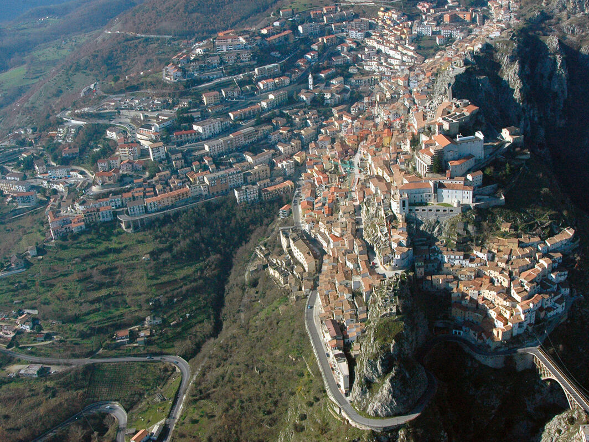
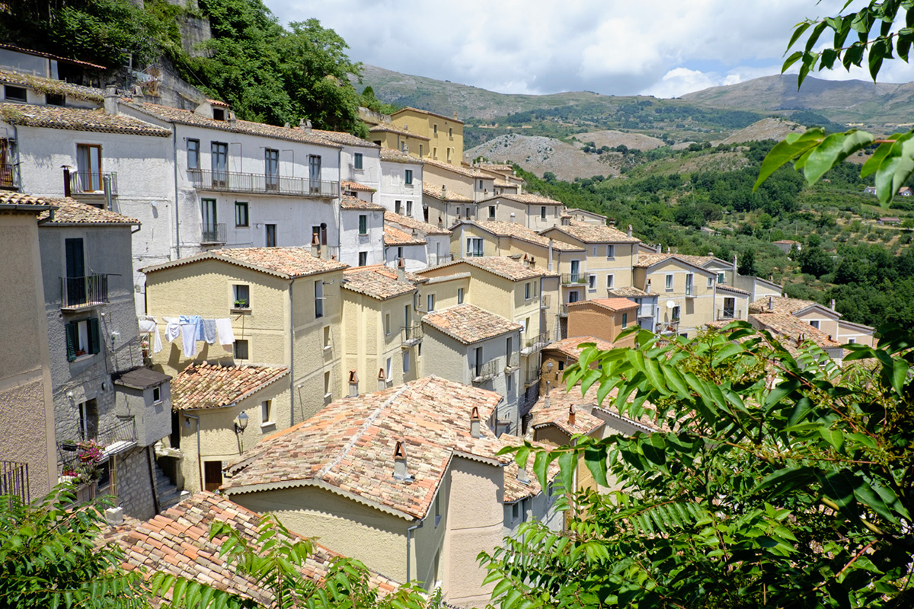

|

|
Sono Andrea Zampino, uno studente di Informatica dell'Itis di Picerno. Frequento il quarto anno dell'indirizzo informatico. Il giorno 01/10/2024 è il giorno della creazione del mio primo sito. Appasionato di informatica ma anche del mondo dello sport dal calcio al corpo libero e alla palestra. |


